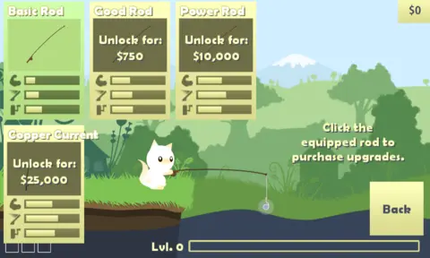

Example Rod
Version 1.0.0
What it does
Example Rod adds the Copper Current to the normal rod shop for $25,000. Buy and equip it through the shop and use normal rod upgrades with it.
Gallery


Technical datasheet
| Package type | ModKit |
|---|---|
| Manifest file | jamm-mod.json |
| APIs used | ModKit rods declarations and the Items API's jamm_rod_register function. |
| Assets and scripts added | 0 game objects, 1 single-frame rod sprite and 2 standalone scripts in the source build on a clean base. The scripts are a package initializer and the rod registration stub. |
| Save-file behaviour | The Items API uses [JAMM_Items] in the native slot INI. It remembers rod ownership under u:rod:example-rod:copper-current, the equipped rod key under eq:rod and upgrades under slot:example-rod:copper-current:<index>. |
| Compatibility | Targets the August 2023 legacy VM archive. The rod gets a slot from the Items API at runtime. Ownership and upgrades follow the stable key across profile orders. If the equipped rod is removed from the profile, loading falls back to the Basic Rod. |
How it works
The rods array provides the price, a single-frame PNG with origin [19, 69] and the rod's stats. The manifest sets cast_speed to 13, rod_power to 1.85, rod_power_flat to 4, reel_speed to 10.5 and sinker_distance to 4,200.
ModKit imports the sprite and generates jamm_init_example_rod, which calls jamm_rod_register with the key example-rod:copper-current. The Items runtime appends a RodData row, uses the manifest values for price and stats, and creates the corresponding UpgradeData row. The rod starts available in the shop.
The manifest sets upgrade_slots to vanilla. ModKit passes the automatic slot sentinel to the Items runtime, which chooses one more usable slot than the highest existing rod count, capped at 16.
Files in the package
art/copper-current.pngjamm-mod.json